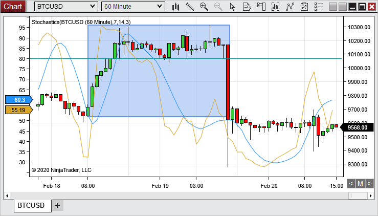

|
<< Click to Display Table of Contents >> Working with Objects on Charts |


|
Working with Objects on Charts
|
<< Click to Display Table of Contents >> Working with Objects on Charts |
|
Charts in NinjaTrader can contain and display multiple objects, including Data Series, Drawing Objects, and indicator plots. Objects on charts can be managed in a number ways, such as dragging and dropping them to new panels, changing the axis of their price scale (if applicable), or changing the order in which they are painted on a chart.
 How to drag and drop chart objects
How to drag and drop chart objects
Drag and DropA Data Series or Indicator can be dragged and dropped to various areas of the chart to quickly change which panel it is displayed in.
Left mouse click on a chart object within a chart, then drag it to any of the following areas of the chart and release the mouse button:
1.Upper limit - Creates a new panel at the top of the chart 2.In between panels - Creates a new panel in between two existing panels 3.Lower limit - Creates a new panel at the bottom of the chart 4.Center area of a panel - Relocates the selected chart object to this panel and automatically determines the most suitable scale justification 5.Left or right margin of a panel - Relocates the selected chart object to this panel (unless already in the selected panel) and changes the scale justification to the selected side of the panel.
When you drag a selected object to the upper or lower edge of a chart, or between two panels, a blue band will appear. This indicates that a new panel will be created when you drop the object in that location.
Tabs and WindowsIn addition to moving around within a single chart tab, A Data Series or indicator can be dragged and dropped into any other chart window or tabs in your workspace. The following drag and drop actions can be performed:
1. Drag an indicator to an existing tab in any chart window - Duplicates the indicator in the tab or window into which it is dropped, leaving the original instance of the object intact 2. Drag a Data Series to an existing tab in any chart window - Replaces the primary Data Series in that tab with the one dropped into it 3. Drag a Data Series to the upper/lower limit, or between two panels, of a separate chart window - Creates a new panel, creating a multi-series chart if only one Data Series had previously been applied 2. Drag an indicator or Data Series to a New tab (+) - Creates a new tab and duplicates the object within it |
 How to copy and paste chart objects
How to copy and paste chart objects
Copy and PasteA Data Series, indicator, or Drawing Object can be copied and pasted to various areas of a chart to quickly duplicate an object and its properties. Chart objects can be copied in one of two ways:
•Left mouse click the chart object to select it. Next, right mouse click the object, then click the copy menu item. •Left mouse click the chart object to select it, then use the Windows default CTRL + C Hot Key
After copying, chart objects can be pasted into the following areas:
•Current chart window or tab - Data Series and indicators will be duplicated in a new panel. Drawing Objects will be pasted with a slight offset from the copied object's location. •Separate chart window or tab - Data Series will be placed in a new panel within the chart window or tab in which it is dropped. Indicators will either be plotted in an existing panel or in a new panel, depending on the indicator's "Overlay" property. Drawing Objects will be placed in the same panel number as the one from which they are copied, if it is available.
|
 How to change the z-order (paint order) of a chart object
How to change the z-order (paint order) of a chart object
Z-OrderObjects within a panel can be adjusted to appear behind or in front of another chart object. The specific layer on which an object sits is referred to as the "z-order."
You can change the z-order (paint order) of all chart objects within each individual panel. Each chart object is assigned a z-order value, which informs you where in the paint order that particular object resides. As a rule of thumb, there are as many z-order levels in a panel as there are chart objects in that panel. For example, if you had a Data Series and an SMA indicator in the same panel, there would be two painting levels. Level 1 is the top most level, which means that any chart object on Level 1 will be painted above all others. Continuing our example, if the Data Series was on Level 1 of 2 and the SMA indicator was on Level 2 of 2, that would mean the Data Series would be painted on top of the indicator.
The image below depicts a "Rectangle" drawing object set at z-order Level 3 of 3, which is behind both the Stochastics indicator (Level 2 of 3) and the ES ##-## Data Series (Level 1 of 3).

To adjust the z-order of an object:
1.Select the chart object by left mouse clicking on it 2.Hold down the "Shift" key on your keyboard and roll the mouse scroll wheel up or down to change the z-order of the object. As you scroll, the object's z-order will be displayed near your mouse cursor.
|